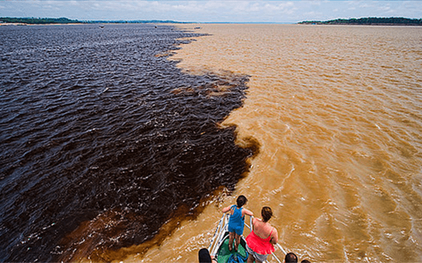

O Teatro Amazonas é um dos mais importantes teatros do Brasil e o principal cartão-postal da cidade de Manaus. Localizado no Largo de São Sebastião, no Centro Histórico, foi inaugurado em 1896 para atender ao desejo da elite amazonense da época, que idealizava a cidade à altura dos grandes centros culturais.
O Teatro Amazonas recebeu, neste sábado (17/07), o serviço de sanitização para a retomada dos espetáculos com a presença da plateia. O espaço, administrado pelo Governo do Amazonas, por meio da Secretaria de Estado de Cultura e Economia Criativa, volta a receber o público com acesso gratuito, protocolos de segurança, agendamento pelo Portal da Cultura e metade da capacidade da casa. As vagas para os primeiros espetáculos estão esgotadas.
 O encontro das águas é um fenômeno natural facilmente visto em muitos rios da Amazônia. Os fatores para isso ocorrer na região variam desde questões geológicas, climáticas, termais ou até mesmo o tamanho ou a acidez dos rios.